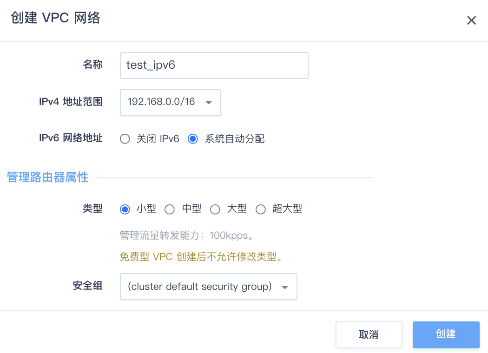
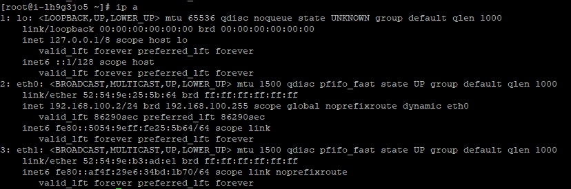

搭建 IPv6 网络并开通公网访问
本文旨在指导您快速搭建一个 IPv6 网络并通过绑定公网IP实现云服务器的公网访问。
背景信息
IPv4 过渡到 IPv6 的方案，大体分为三类：双栈、隧道和转换。
- 双栈指IPv4和IPv6同时在设备和网络中存在的方案。
- 隧道指将 IPv6 的数据包封装在现有协议（IPv4）里面，通过隧道封装实现互通。
- 转换指在 IPv6 的网络和 IPv4 的网络之间建立转换机制，以实现两张网络的设备之间的互通。
平台提供 IPv4 / IPv6 双栈的产品和服务。无论是普通用户还是应用程序，双栈是最简单最便捷的，客户端和服务端可以选择自己倾向的网络。
创建支持 IPv4/ IPv6 双栈的网络
创建启用 IPv6 的 VPC
您只需要在创建专有网络 VPC 时，在 IPv6 网络地址选择系统自动分配即可创建支持 IPv4/IPv6 双栈的 VPC 。创建后可查看 IPv6 管理地址范围的详细信息。专有网络VPC会默认分配掩码为 /56 的IPv6地址段。
创建启用 IPv6 的私有网络
为专有网络 VPC 添加私有网络, 在 IPv6 网络地址处选择“系统自动分配或者手动指定，即可创建出启用 IPv6 的私有网络。
创建完成后，即可查看私有网络的管理 IPv6 属性。私有网络的 IPv6 网络地址默认为掩码为 /64 的 IPv6 地址。
安全组开通 IPv6 协议
为了保证您的云服务器安全，在云服务器 IPv6 接入公网时自动加载安全组以保证您的访问安全。因此接入公网之后，您需要在云服务器的安全组上开通 IPv6 的相关访问协议。
说明：
在启用 IPv6 后，除 IPv6 ICMP（ping6）需额外配置，其他在您安全组策略规则会同时应用到 IPv6 地址。
IP/端口集合功能同样适用于 IPv6 ，您也可以用此功能实现对 IPv6 地址/端口的批量管理。
升级现有网络资源支持 IPv4 / IPv6 双栈
除创建新 VPC 和私有网络支持 IPv6 外，您也可升级您现有的仅支持 IPv4 的 VPC 和私有网络来支持 IPv6 。
升级 VPC 支持 IPv6
在 VPC 页面上点击更多操作，选择启用 IPv6 ，在弹出的提示框中点击确认，即可完成 VPC 支持 IPv6 的升级。
升级后即可看到 VPC 的 IPv6 地址范围。
升级私有网络支持 IPv6
原有的 VPC 升级为 IPv6 以后，私有网络也可以一键升级为 IPv6 。
-
在 VPC 的私有网络列表上，右键点击要升级的私有网络，在弹出的右键菜单中点击启用 IPv6 。
-
在弹出的窗口中，选择系统自动分配或手动指定，点击提交即可。
创建云服务器并加入到启用 IPv6 的私有网络
在私有网络中，点击创建资源按钮，选择云服务器，按照向导选择支持 IPv6 DHCP 自动化配置的镜像完成创建云服务器后，可查看云服务器的 IPv6 地址信息。
说明：
在选择镜像时，镜像名称后带有IPv6标识即表示支持 IPv6 自动化配置。若从其他的镜像启动的云服务器， 则未针对 DHCPv6 进行配置， 该云服务器的网络接口无法自动获取/识别 IPv6 相关网络配置，需手动配置该云服务器，参考开启云服务器 IPv6 自动化配置 。
开通云服务器 IPv6 公网访问
有以下两种方式可以提供 IPv6 的公网访问，您可以根据自己的网络需求和偏好进行选择。
- 方式一：通过 VPC 的双栈网络 DHCP 获取到 IPv6 地址，然后通过控制台为 IPv6 分配公网带宽的方式来实现公网访问。该方案使 IPv6 网络同时具备公网和 VPC 内网的访问能力。
- 方式二：申请一个 IPv6 弹性 IP 并绑定到虚拟机或者负载均衡器上，然后手动配置 IPv6 地址及路由以实现公网访问。该方案使 IPv6 网络只具有公网访问能力，无法与 VPC 内部的 IPv6 互通，类似于内网的 IPv4 是无法访问公网 IPv4。
方式一：IPv6 接入公网
右键点击云服务器，在弹出菜单中依次选择：公网 IPv6 > IPv6 接入公网，在弹出的对话框中，为 IPv6 公网 IP 选择计费模式，点击确定即可。

接入公网以后，在公网 IP 页面，可查看接入公网的 IPv6 地址详情，以及计费和监控的具体信息。
方式二：申请 IPv6 公网 IP 并绑定云服务器

手动申请的 IPv6 弹性 IP 的使用与内部绑定的公网 IP 类似，将 IPv6 分配到云服务器后可以看到云服务器内多出一块还未分配 IP 地址的公网网卡。以镜像 centos75x64b 为例，如下图所示

在绑定 IPv6 弹性 IP 后，您还需要手动为云服务器内的公网网卡进行网络配置，主要包括对网卡 IPv6 地址配置及路由配置，详情请见内部绑定 IPv6 公网 IP。
负载均衡器支持 IPv6
在创建新的负载均衡器时，您可以选择已经申请的 IPv6 弹性 IP，这样负载均衡器在创建完成后就绑定了选择的 IPv6 弹性 IP。
对于现有的负载均衡器，也可以将申请到的 IPv6 弹性 IP 绑定到负载均衡器上。
绑定完成后，用户的服务端就可以通过负载均衡器的 IPv6 地址对外提供服务了。